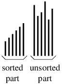

A select sort operates by repeatedly selecting the smallest data element of an unsorted portion of the array and moving it to the end of a sorted portion. Thus, at each step, the data items will be arranged into two parts:
The following figure illustrates this arrangement.

Initially, the sorted part will be empty. At each step, the unsorted part is rearranged so that its smallest element comes first. As a result, the sorted part can now contain one more element, and the unsorted part one fewer element. After $n - 1$ steps, where $n$ is the number of elements in the array, the sorted part will have all but one of the elements. Because the one element in the unsorted part must be at least as large as all elements in the sorted part, the entire array will be sorted at this point.
The approach outlined above can be implemented in various ways. The main difference in these implementations is in how we rearrange the unsorted part to bring its smallest element to the beginning of that part. The most straightforward way to do this is to find the smallest element in this part, then swap it with the first element in this part. The resulting algorithm is called selection sort. It requires nested loops. The outer loop index keeps track of how many elements are in the sorted part. The unsorted part then begins at this index. The inner loop is responsible for finding the smallest element in the unsorted part. Once the inner loop has finished, the smallest element is swapped with the first element in the unsorted part.
Note that the inner loop in selection sort iterates once for every element in the unsorted part. On the first iteration of the outer loop, the unsorted part contains all $n$ elements. On each successive iteration, the unsorted part is one element smaller, until on the last iteration, it has only $2$ elements. If we add up all these values, we find that the inner loop iterates a total of exactly $(n - 1)(n + 2)/2$ times. This value is proportional to $n^2$ as $n$ increases; hence, the running time of the algorithm is in $O(n^2)$. Furthermore, this performance occurs no matter how the data items are initially arranged.
As we will see in what follows, $O(n^2)$ performance is not very good if we want to sort a moderately large data set. For example, sorting $10,000$ elements will require about $5$ billion iterations of the inner loop. On the positive side, the only time data items are moved is when a swap is made at the end of the outer loop; hence, this number is proportional to $n$. This could be advantageous if we are sorting large value types, as we would not need to write these large data elements very many times. However, for general performance reasons, large data types shouldn’t be value types — they should be reference types to avoid unnecessary copying of the values. For this reason, selection sort isn’t a particularly good sorting algorithm.
Performance issues aside, however, there is one positive aspect to selection sort. This aspect has to do with sorting by keys. Consider, for example, the rows of a spreadsheet. We often want to sort these rows by the values in a specific column. These values are the sort keys of the elements. In such a scenario, it is possible that two data elements are different, but their sort keys are the same. A sorting algorithm might reverse the order of these elements, or it might leave their order the unchanged. In some cases, it is advantageous for a sorting algorithm to leave the order of these elements unchanged. For example, if we sort first by a secondary key, then by a primary key, we would like for elements whose primary keys are equal to remain sorted by their secondary key. Therefore, a sorting algorithm that always maintains the original order of equal keys is said to be stable. If we are careful how we implement the inner loop of selection sort so that we always select the first instance of the smallest key, then this algorithm is stable.
Another implementation of a select sort is bubble sort. It rearranges the unsorted part by swapping adjacent elements that are out of order. It starts with the last two elements (i.e., the elements at locations $n - 1$ and $n - 2$), then the elements at locations $n - 2$ and $n - 3$, etc. Proceeding in this way, the smallest element in the unsorted part will end up at the beginning of the unsorted part. While the inner loop is doing this, it keeps track of whether it has made any swaps. If the loop completes without having made any swaps, then the array is sorted, and the algorithm therefore stops.
Like selection sort, bubble sort is stable. In the worst case, however, the performance of bubble sort is even worse than that of selection sort. It is still in $O(n^2)$, but in the worst case, its inner loop performs the same number of iterations, but does a lot more swaps. Bubble sort does outperform selection sort on some inputs, but describing when this will occur isn’t easy. For example, in an array in which the largest element occurs in the first location, and the remaining locations are sorted, the performance ends up being about the same as selection sort — even though this array is nearly sorted. Like selection sort, it is best to avoid bubble sort.
A select sort that significantly outperforms selection sort is known as heap sort. This algorithm is based on the idea that a priority queue can be used to sort data — we first place all items in a priority queue, using the values themselves as priorities (if we are sorting by keys, then we use the keys as priorities). We then repeatedly remove the element with largest priority, filling the array from back to front with these elements.
We can optimize the above algorithm by using a priority queue implementation called a binary heap, whose implementation details we will only sketch. The basic idea is that we can form a binary tree from the elements of an array by using their locations in the array. The first element is the root, its children are the next two elements, their children are the next four elements, etc. Given an array location, we can then compute the locations of its parent and both of its children. The priorities are arranged so that the root of each subtree contains the maximum priority in that subtree. It is possible to arrange the elements of an array into a binary heap in $O(n)$ time, and to remove an element with maximum priority in $O(\lg n)$ time.
Heap sort then works by pre-processing the array to arrange it into a binary heap. The binary heap then forms the unsorted part, and it is followed by the sorted part, whose elements are all no smaller than any element in the unsorted part. While this arrangement is slightly different from the arrangement for the first two select sorts, the idea is the same. To rearrange the unsorted part, it:
Heap sort runs in $O(n \lg n)$ time in the worst case. Information theory can be used to prove that any sorting algorithm that sorts by comparing elements must make at least $\lg(n!)$ comparisons on some arrays of size $n$. Because $\lg(n!)$ is proportional to $n \lg n$, we cannot hope to do any better than $O(n \lg n)$ in the worst case. While this performance is a significant improvement over selection sort and bubble sort, we will see in a later section that there is an algorithm (quick sort) that does even better in practice. Furthermore, heap sort is not stable.
On the other hand, we will also see that in spite of the fact that quick sort usually outperforms heap sort, there are rare cases that cause it to perform badly. In order to avoid this bad behavior, a hybrid algorithm using both quick sort and heap sort has been developed. We will examine this approach in “Hybrid Sorts”.